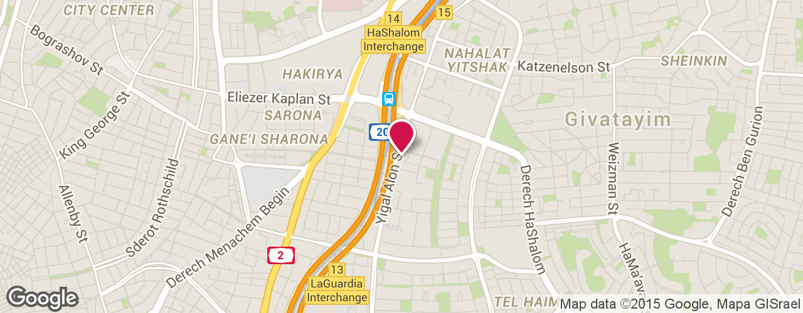
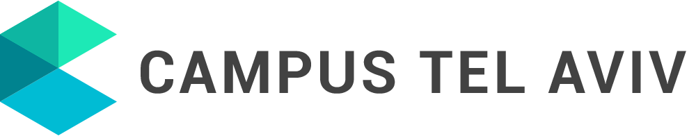

ورشة عمل للمعرفة العامة جنباً إلى جنب مع جمعية ويكيميديا إسرائيل تدعوكم، منظمات التغيير الاجتماعي، صحفيين وناشطين لتدريب عملي على استخدام أدواتنا لأغراضكم الاجتماعية، في حين التعرض إلى عالم المعرفة، مصدر مفتوح ومحتوى حر.
للتسجيلالبرنامج
| 9:30 | للتسجيل |
| 10:00-11:00 |
الافتتاحية شابي كورزان المديرة العامة ورشة عمل للمعرفة العامة ميخال ليستر، المدير العام ويكيميديا إسرائيل لماذا لا ©؟ بين حقوق الطبع والنشر لمشاركة المحتوى في العصر الرقمي المحامية النائبة داليت كين-درور فيلدمان، مرشدة قانونية، عيادة القانون والتكنولوجيا، كلية الحقوق، جامعة حيفا صحافة جديدة. كيف يمكن للصحافة المبنية على البيانات أن تُدخل الإهتمام الى الكنيست تومر أفيتال، 100 يوماً من الشفافية |
| 11:00-11:30 | استراحة القهوة |
| 11:30-12:30 |
ورشات عمل متزامنة: ويكيبيديا باختصار شديد / 'تذوق' ورشة عمل للمعرفة العامة |
| 12:30-13:30 |
ورشات عمل متزامنة: ويكيبيديا باختصار شديد / كنيست مفتوحة / مفتاح ميزانية |
| 13:30-14:00 | وجبة غداء |
| 14:00-15:00 |
ورشات عمل متزامنة: كنيست مفتوحة / مفتاح ميزانية |
* من المستحسن الحضور مع أجهزة الكمبيوتر المحمولة.
ورشات عمل
ويكيبيديا باختصار شديد

إذا كنتم تستخدمون ويكيبيديا، أنتم في الحقيقة لستم وحدكم. البيانات عن حجم النشاط واستخدام ويكيبيديا تقريباً وهمية. تريدون نظرة خاطفة وراء الكواليس لعملية إنشاء المعرفة، التعرف على المناقشات العاصفة وآلية صنع القرار التعاوني الذي يشكل صياغة القيم، وتعلم كيفية تلقي المعلومات وتوزيعها في ويكيبيديا؟ الأدوات التي تكتسبونها في هذه الورشة تسمح لكم فهم أفضل لكيفية دمج المعرفة المهمة من عوالم نشاطاتكم، في منصة المعلومات المركزية اليوم.
التدريب العملي على موقع كنيست مفتوحة

سنرى كيف يمكننا تتبع الفعاليات البرلمانية للكنيست، التحقق من كيفية تصويت أعضاء الكنيست، البحث في بروتوكولات لجان الكنيست والجلسات العامة، متابعة العملية التشريعية وتحديد جماعات اللوبي. نرى تقييم أعضاء الكنيست والاحزاب وفقاً لجداول الأعمال الاجتماعية المختلفة ونتعلم كيف يمكنكم إنشاء مؤشرات ووضع جدول أعمال جديد خاص بكم في الموقع.
التدريب العملي على موقع مفتاح الميزانية

سنتعلم البحث في الموازنة العامة للدولة ومعرفة كمية الأموال المرصودة للوزارات، برامج ومجالات محددة. سنتعلم العثور على معلومات حول الإنفاق الحكومي -دعم لكيانات القطاع الخاص والجمعيات، والإنفاق على المشتريات وخدمة الإعفاء من العطاء. سنرى التغيير في الميزانية عقب التحويلات الميزانية، والاختلافات بين ميزانيات السنوات المختلفة.
تذوق ورشة العمل
التعرض لمجموعة متنوعة من الأدوات لورشة العمل:

- كنيست مفتوحة – السماح بتتبع النشاط البرلماني، بما في ذلك مشاهدة التصويت، بروتوكولات اللجان والجلسات العامة، اقتراح لقانون، تقييم أعضاء الكنيست والاحزاب وفقاً لجداول الأعمال الاجتماعية وغيرها.
- مفتاح الميزانية – يتيح الخوض في بنود مختلفة للموازنة العامة للدولة، تتبع التحويلات الميزانية، لفهم كيفية توزيع كعكة الميزانية وكيف تتغير.
- المعاش التقاعدي المفتوح - تحليل السياسات الاستثمارية لصناديق تقاعد المواطنين من قبل هيئات الاستثمار المؤسسي.
- ميدان الدولة – يركز أوضاع أعضاء الكنيست في الشبكة الاجتماعية.
- Anyway – يضع خارطة لحوادث الطرق ويسمح بتحديد مقاطع الطرق والتقاطعات الخطرة.
- جلب المعلومات – جهاز لتقديم طلبات حرية المعلومات عن المنظمات المعفاة من الرسوم.
- ديسكورس – منتدى للنقاش المجتمعي.
متى و اين
الحرم الجامعي جوجل – يغئال ألون، 98، الطابق 34 (بالقرب من قطار هشالوم)
الإثنين | 23.11.2015 | 09:30-15:00
من نحن
ورشة العمل للمعرفة العامة هي جمعية تعمل على تعزيز الشفافية والمساءلة الحكومية وتشجيع الحوار المدني القائم على المعلومات، من خلال تطوير المواقع والتطبيقات لفتح وإمكانية الوصول إلى المعلومات العامة. أنشطة الجمعية مبنية على أساس عمل متطوعين من مجال تطوير البرمجيات، الاقتصاد، السياسة العامة، الصحافة، التصميم الجرافيك والمزيد الذين يقودوا أكثر من 15 مشروعاً مختلفاً للبيانات المفتوحة. القائمة الكاملة للمشاريع: hasadna.org.il/projects.

تشارك جمعية ويكيميديا إسرائيل في جمع، خلق وتقديم المحتوى المجاني والشراكات. تدعم الجمعية المجتمع المحلي من محرري ويكيبيديا ومشاريعها الشقيقة مثل ويكيميلون، ويكوشيتوف وغيرها، ولها مجموعة من الشراكات مع المؤسسات الثقافية، التعليم العالي، ونظام التعليم لتشجيع النشر والوصول إلى المعرفة والمعلومات للجمهور. نحن نعتقد أن كل شخص يحق له أن يستهلك ويساهم في المحتوى والمعرفة بحرية، دون تكلفة، ونحن سعداء بتعزيز تقدم التعليم والمعرفة مجاناً في إسرائيل والعالم.
المضيفة: 
עיצוב: יונתן שמיר